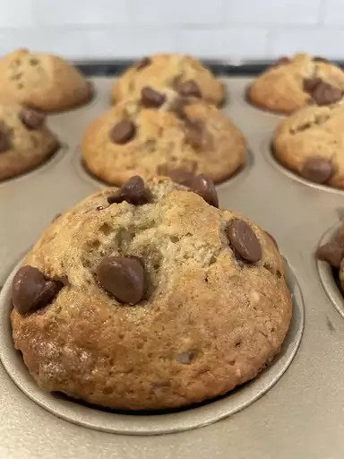

Banana Muffin
Home

Description
These delicious banana muffins are quick and easy for kids to make.
Ingredients
- 1½ cups all-purpose flour
- 1 teaspoon baking powder
- 1 teaspoon baking soda
- ½ teaspoon salt
- 3 large bananas, mashed
- ¾ cup white sugar
- 1 egg
- ⅓ cup butter, melted
Steps
- Preheat the oven to 350 degrees F (175 degrees C). Grease a 12-cup muffin tin or line cups with paper
liners. Sift flour, baking powder, baking soda, and salt together in a bowl; set aside.
- Mix bananas, sugar, egg, and melted butter in a separate large bowl until well combined; fold in flour
mixture until smooth. Spoon batter into the prepared muffin cups, filling each 2/3 full.
- Bake in the preheated oven until tops spring back when lightly pressed, about 25 to 30 minutes. Cool briefly
in the tin, then transfer to a wire rack to cool completely.